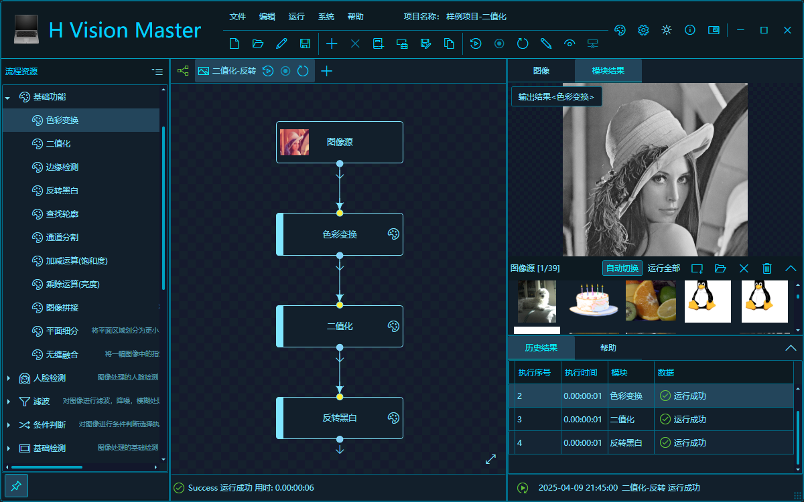
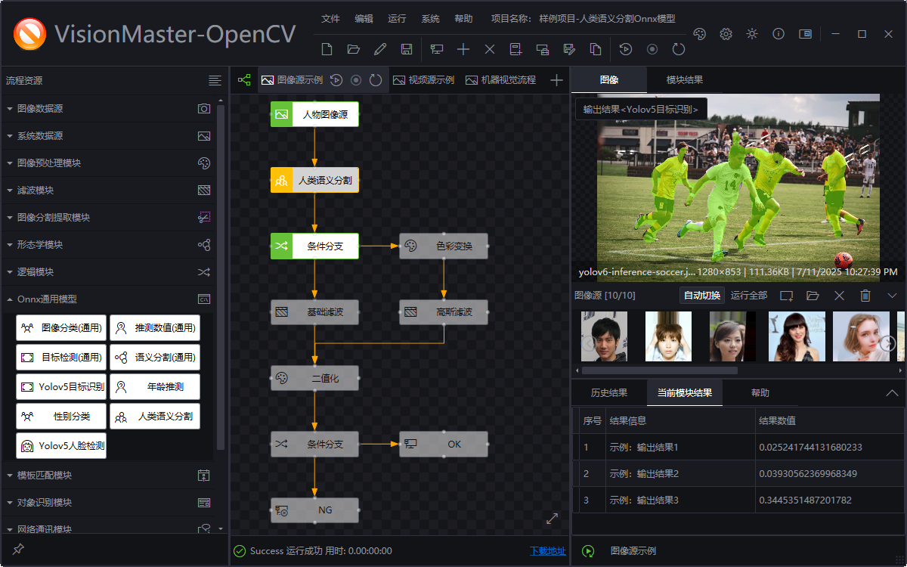
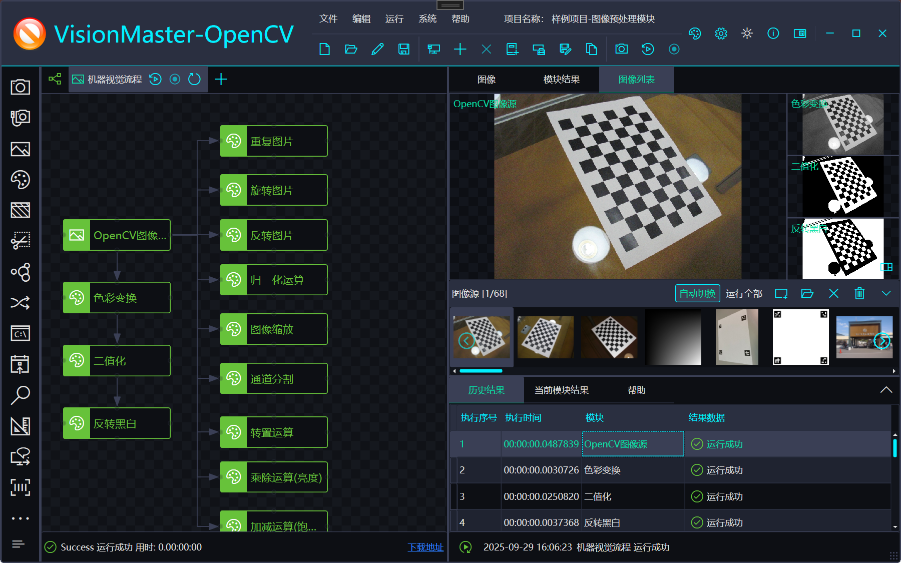

可视化流程编排
以流程图组织图像、视频、相机、OpenCV、ONNX、通信和检测记录节点，便于搭建与验证视觉处理链路。




WPF VisionMaster 是一个基于 .NET 8、WPF 和 OpenCvSharp4 的机器视觉流程编排解决方案。项目参考 VisionMaster 类产品的交互方式，提供图像、视频、相机、OpenCV 算子、ONNX 推理、检测记录、项目管理、身份权限、主题以及通用 WPF 控件等能力。
以流程图组织图像、视频、相机、OpenCV、ONNX、通信和检测记录节点，便于搭建与验证视觉处理链路。
集成 OpenCV 图像处理、模板匹配、图像矫正和 ONNX 推理能力，可扩展目标检测、分类与语义分割场景。
支持本地图像、图像文件夹、本地视频、示例数据集和海康工业相机等数据源。
提供项目管理、身份认证、角色权限、检测记录、主题设置、日志和通用桌面端组件。
按 H.Controls、H.Extensions、H.Modules、H.Services 与 H.VisionMaster 分层，支持按需复用与二次开发。
使用 Entity Framework Core 8 支持 SQLite 与 SQL Server 相关模块，项目数据可使用 JSON 序列化保存。
承载应用启动、流程画布、项目与运行界面，是机器视觉平台的主 WPF 应用。
包含相机、项目、检测记录、通信、OpenCV、ONNX 和 Zoo 示例等机器视觉业务模块。
提供流程图、表单、属性网格、图表、主题、消息和导航等 WPF 通用控件。
提供序列化、日志、设置、身份、项目、消息和其他跨模块基础服务。
WPF VisionMaster 由 HeBianGu 开发和维护。如需技术交流、项目合作或商业授权，请通过以下官方渠道联系。
作者：HeBianGu QQ：908293466 交流群：971261058